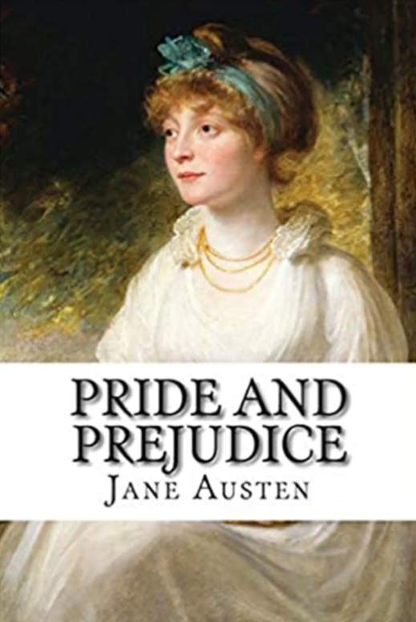
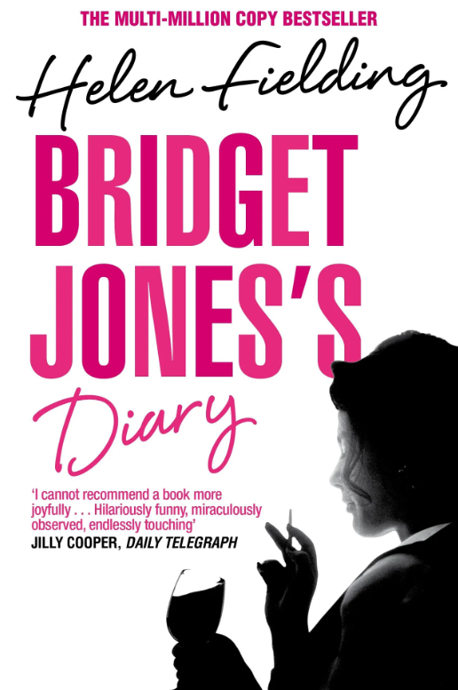

There is just something about a good love story that it’s hard not to, well... love. I’m not talking about
the
conventional 'guy-on-a-white-horse rescues girl, and they live happily ever after' but the stories about love
that
are filled with ups and downs, hardships and happiness – the ones that are enough to make even the most
cynical
of
us believe in true love.
While Netflix does a pretty good job of giving us the romantic stories we all crave – Bridgerton, anyone? –
there’s no better place to lose yourself than in a romance novel. There is nothing quite like reading the
scene
of
Mr. Darcy emerging from the pond and using your own imagination. So, I’ve rounded up the very
best romance novels that should be on your summer reading list.

1. PRIDE AND PREJUDICE by Jane Austen
Pride and Prejudice follows the turbulent and passionate relationship between daughter of a
country gentleman,
Elizabeth Bennet, and Fitzwilliam Darcy, a rich aristocratic landowner. They cannot happily fall in love and
marry until they have overcome the sins of pride and prejudice.
Buy it now

2. BRIDGET JONE'S DIARY by Helen Fieldir
A classic. Only ever watched the film? Now it's time to read the book. It follows Bridget
through her struggles
that come with the minefield of your thirties and watches as she asks herself the ultimate question: Daniel
Cleaver or Mark Darcy?
Buy it now

3. THE FORTUNATE ONES by Catherine Hokin
A beautiful and gripping wartime love story, The Fortunate Ones is the compelling read of
Inge
and Felix’s love
during Nazi rule in Germany. She has been married off to a Nazi officer by her father and he is Jewish; as he
gets transported to the Sachsenhausen concentration camp, she knows she will have to do anything she can to
save
him – no matter the consequences.
Buy it now